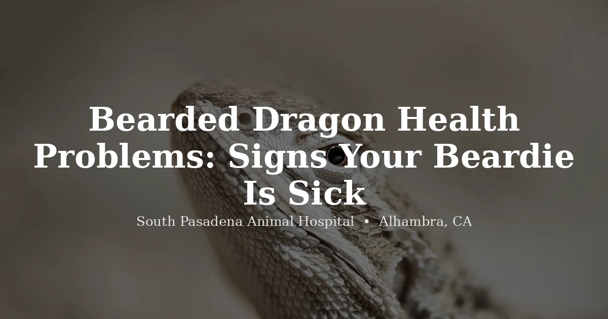

June 3, 2026 · 8 min read
Bearded Dragon Health Problems: What to Watch For and When It's Time to Call a Vet

Bearded dragons are stoic. That's not a compliment to their toughness — it's a warning. As prey animals, they're hardwired to suppress visible signs of illness for as long as possible, because in the wild, a sick animal is a targeted animal. By the time your beardie is sitting in the corner looking obviously unwell, something has usually been off for a while.
We see this pattern regularly at our clinic. An owner brings in their bearded dragon saying it's been "a little slow" for a few days. On examination, we find significant weight loss, early metabolic bone disease, or a gut full of substrate that's been there longer than the owner realized. Bearded dragons do not give you obvious warning signs early. You have to know what subtle looks like.
This guide covers the most common bearded dragon health problems, what signs actually mean something, and which situations need a same-day call rather than a wait-and-see approach. We also cover the reptile care basics that prevent most of these problems in the first place.
The Most Common Bearded Dragon Health Problems
Metabolic Bone Disease (MBD)
If there's one condition we want every bearded dragon owner to know about, it's MBD. Metabolic bone disease is the most common health problem we see in this species, and it is almost entirely preventable with correct husbandry — yet it's widespread, because UVB lighting requirements for bearded dragons are still poorly understood by many first-time owners.
Here's what happens: bearded dragons need UVB radiation to synthesize vitamin D3, which is required to absorb dietary calcium. Without sufficient UVB, calcium absorption drops even if the diet is perfect. The body then pulls calcium from the bones to maintain blood levels for muscle and nerve function. Over time, the skeleton weakens.
The clinical signs are hard to miss once they're visible: rubbery or pliable limbs (healthy bones should be firm), tremors or muscle twitching, a dragon that can't lift its body off the ground and drags itself instead of walking, and in advanced cases a curved spine or swollen jaw from bone deformity. Any degree of limb pliability is a red flag.
MBD is urgent. Once a bearded dragon's limbs are visibly rubbery or it's showing tremors, this needs veterinary attention promptly — not next week. How much ground can be recovered depends on how far the disease has progressed and what your vet finds on exam — but advanced MBD causes permanent skeletal damage that can't be undone, which is exactly why catching it early matters so much. Call (626) 441-1314 for an appointment.
Prevention is straightforward: a high-output UVB bulb (T5 HO, 10.0 strength) positioned appropriately for the enclosure depth, replaced every six months even if it's still producing visible light (UVB output declines well before the bulb burns out), and calcium supplementation on appropriately sized feeder insects. Juveniles need more calcium than adults.
Impaction
Impaction means a blockage in the gastrointestinal tract — and in bearded dragons, it's more common than people expect. The usual causes are loose particle substrates (sand, gravel, calcium sand — all of these are problematic, especially for juveniles), feeder insects that were too large, and chronic dehydration that slows gut motility.
The signs are often vague at first: a dragon that's not defecating when it normally would, generalized lethargy, loss of appetite. As impaction progresses, you may see hind leg weakness or paralysis (pressure on the spinal cord from the blockage) and a persistently black beard. In severe cases, the abdomen may feel firm to the touch.
Stop offering insects if you suspect impaction — more food going in makes the situation worse. We'd rather you call us than try to manage this one at home: if the dragon hasn't defecated within a day or two, or is showing any hind leg symptoms, that's a vet visit, not a wait-and-see situation. Radiographs can confirm what's actually going on and how serious it is.
Substrate choice matters more than most people realize. Paper towels and reptile carpet don't look as natural as sand, but for juveniles especially, loose particle substrates carry a real impaction risk. We'd rather your dragon look like it's in a clinical enclosure than end up impacted.
Respiratory Infections
Bearded dragons are desert animals and don't tolerate drafts, damp enclosures, or temperatures that drop too low at night. When husbandry conditions are off, respiratory infections follow.
Signs include wheezing or audible breathing sounds, open-mouth breathing (a healthy bearded dragon almost never breathes with its mouth open except during normal thermoregulation at the basking spot), mucus around the mouth or nares, and a dragon that has become progressively less active and stopped eating. Secretions that are white or yellow rather than clear suggest bacterial infection rather than early viral illness.
Respiratory infections in reptiles can progress to pneumonia quickly, and unlike mammals, reptiles don't show fever — their temperature regulation is environmental. This means the usual early-warning signs that something is very wrong are absent. A dragon that's been wheezing for a week and still seems "okay" may be much sicker than it looks. Veterinary evaluation includes physical examination, possibly radiographs, and treatment is typically antibiotics with supportive care depending on severity.
Adenovirus (Atadenovirus) — the "Wasting Disease"
This one is less common but worth knowing about, especially if you've acquired a beardie from a breeder or rescue where multiple animals were housed together. Atadenovirus (formerly called "wasting disease" or ADV) is a viral infection that affects the liver, nervous system, and gastrointestinal tract.
The neurological signs are the most recognizable: "stargazing," where the dragon tilts its head backward and looks up toward the ceiling, along with uncoordinated movements, seizures, and overall failure to thrive. Some affected dragons show predominantly GI signs — chronic weight loss, regurgitation, abnormal droppings — without obvious neurological symptoms.
There is no cure for atadenovirus. Management is supportive — optimizing husbandry, treating secondary infections as they arise, and monitoring quality of life. Some infected animals carry the virus with minimal symptoms for years; others decline rapidly. Testing is available through reptile-experienced veterinarians and should be considered if you're acquiring a new bearded dragon or have unexplained neurological signs.
Internal and External Parasites
Parasites are common in bearded dragons, especially those sourced from wild-caught feeder insects or purchased from large-scale breeding operations. Pinworms are the most frequently found internal parasite — many dragons carry low levels without any clinical signs. But heavy parasite burdens cause real problems: weight loss despite a good appetite, bloating, abnormal or bloody droppings, and general lethargy.
External parasites, particularly mites, show up as tiny moving dots on the skin, often concentrated around the eyes, ears, and moist skin folds. Mite infestations cause irritation, dysecdysis (shedding problems), anemia in heavy infestations, and significant stress.
Diagnosis requires a fecal exam for internal parasites — you can't guess at parasite load by looking at the animal. We recommend a baseline fecal exam for any new bearded dragon, particularly those of unknown history. Treatment is targeted based on what's found.
Shedding Problems (Dysecdysis)
Bearded dragons shed in patches, not all at once like snakes. Some retained shed is normal and resolves on its own. But when shed gets stuck around the toes, the tip of the tail, or the eyes, it becomes a constriction problem — cutting off circulation to the extremity.
Low humidity, dehydration, mites, and poor nutrition are the usual culprits behind dysecdysis. A dragon that never seems to finish a shed, has dull or patchy coloring between sheds, or has visibly thickened rings of old shed around its toes needs attention.
A warm soak can help loosen retained shed on the body. Do not pull stuck shed off — it's firmly attached to underlying tissue and you will cause injury. If shed has been stuck around a toe or the eye area for more than 48 hours, or if any toe looks swollen, discolored, or constricted, that's a vet appointment. Retained shed around the eyes specifically can lead to eye infections and vision damage if left.
Yellow Fungus Disease (Chrysosporium anamorph of Nannizziopsis vriesii — CANV)
Yellow fungus disease is one of the more alarming bearded dragon health problems, and it moves fast. The fungal infection causes discolored patches on the skin — typically yellow, brown, or black — that appear sunken, crusty, or necrotic rather than raised. The lesions spread, can penetrate into underlying muscle and bone, and may appear on the face, limbs, or body.
It's easy to initially mistake for a minor skin wound or bruising. The difference is that yellow fungus lesions do not heal — they expand. If you see a skin lesion that looks off and is growing rather than resolving within a week, get it evaluated. Diagnosis requires culture and/or biopsy. Treatment involves antifungal medication (often long-term), and in some cases surgical debridement of affected tissue. The prognosis depends heavily on how early it's caught.
Regurgitation
A bearded dragon that brings back recently eaten food is telling you something. Regurgitation — the passive return of undigested food — is different from vomiting in mammals and happens for several reasons in reptiles: handling too soon after a meal (the most common cause in otherwise healthy dragons), an enclosure that's too cold to allow proper digestion, parasites, or an underlying GI illness.
The timing relative to feeding is the most useful piece of information. Regurgitation within an hour of eating, especially if it happens after the dragon was picked up or startled, is usually environmental. Repeated regurgitation regardless of handling, or regurgitation of food that was eaten many hours ago, is a red flag for something systemic — parasites, adenovirus, or other GI disease.
The rule of thumb: don't handle your dragon for at least an hour after feeding, keep temperatures in the appropriate range during and after meals, and if regurgitation becomes a pattern rather than an isolated incident, schedule an exam rather than waiting to see if it self-resolves.
Husbandry: Getting the Basics Right Prevents Most Problems
Seeing these signs in your bearded dragon in the Alhambra, Pasadena, or San Gabriel Valley area? South Pasadena Animal Hospital is accepting new exotic patients. Call (626) 441-1314 or book an appointment online. We're at 3116 W Main St, Alhambra — 10 minutes from Pasadena.
A significant percentage of the bearded dragon health problems we see in our clinic trace back to incorrect husbandry — not negligence, just gaps in information. These are the non-negotiables:
- Basking spot temperature: 100–110°F measured at the basking surface with a temperature gun (not an ambient thermometer). This is where your dragon spends most of its time, and the temperature needs to be accurate for digestion and immune function.
- Cool side temperature: 80–85°F. The gradient matters. A dragon needs to be able to thermoregulate by moving between zones.
- Nighttime temperature: Shouldn't drop below 65–70°F. Many homes are fine; basements or rooms near drafty windows may not be.
- UVB lighting: A high-output T5 HO 10.0 UVB bulb, running 10–12 hours per day. Replace every 6 months regardless of whether the bulb is still glowing — UV output fades before visible light does. This is the most commonly overlooked factor in MBD cases we see.
- Substrate: Paper towels or reptile carpet for juveniles under 16 inches. Tile is a practical and easy-to-clean option for adults. Loose particle substrates like sand — including so-called "calcium sand" — are an impaction risk we recommend avoiding.
- Feeding: Feeder insects should be no wider than the space between your dragon's eyes — larger prey is a choking and impaction risk. Juveniles eat primarily insects (70–80%) with greens offered daily; adults shift to primarily greens (70–80%) with insects a few times a week. Dust feeders with calcium powder at most meals, and rotate in a vitamin D3 supplement per your vet's guidance.
- Hydration: Many bearded dragons don't drink standing water readily. A warm soak 2–3 times a week helps maintain hydration and supports healthy shedding and gut motility.
When to See a Vet
Bearded dragons are not good at showing you they're sick. Here are the signs that warrant a call to the vet rather than monitoring at home:
- Not eating for more than 1–2 weeks outside of brumation — especially if the dragon is also losing visible weight
- A persistently black beard that doesn't resolve with normal activity or after a bowel movement
- Any respiratory signs: wheezing, open-mouth breathing while resting, mucus around the mouth or nostrils
- Hind leg weakness, dragging, or paralysis — this can indicate impaction, MBD, or spinal injury
- Rubbery or pliable limbs — this is MBD until proven otherwise
- Retained shed around the toes or eyes after 48 hours
- Any skin lesion that is growing or looks necrotic rather than healing
- Neurological signs: head tilting back (stargazing), circling, tremors, or seizures
- Repeated regurgitation — more than once or twice and not explained by handling too soon after meals
- No bowel movement for more than 1–2 weeks in a normally active dragon
If you're unsure whether something warrants a call, call anyway. That's what we're here for. A quick phone conversation is a lot easier than treating a condition that's been developing for weeks.
We see bearded dragons and other reptiles at South Pasadena Animal Hospital, conveniently located in Alhambra and serving the San Gabriel Valley. To schedule an appointment, call (626) 441-1314 or book online. Appointments are required — we do not accept walk-ins.
Frequently Asked Questions About Bearded Dragon Health
What are the most common bearded dragon health problems?
The most common issues we see are metabolic bone disease (MBD), impaction, respiratory infections, atadenovirus, internal parasites, shedding problems (dysecdysis), yellow fungus disease, and regurgitation. MBD is particularly prevalent and often comes down to UVB lighting that's outdated or incorrectly positioned. Many of these conditions overlap in their early signs — lethargy and appetite loss show up in almost all of them — which is why a proper examination matters rather than guessing at home.
How do I know if my bearded dragon is sick?
Signs of a sick bearded dragon include prolonged lethargy, a persistently black beard, not eating for more than one to two weeks outside of brumation, open-mouth breathing or wheezing, rubbery limbs, hind leg weakness or paralysis, retained shed around toes or eyes, and any neurological signs like tilting the head upward or circling. Bearded dragons are prey animals and suppress visible signs of illness — by the time symptoms are obvious, the problem has often been building for a while.
What is MBD in bearded dragons?
Metabolic bone disease is caused by calcium and vitamin D3 deficiency, almost always the result of inadequate UVB lighting or dietary imbalance. Without enough UVB, the body can't absorb calcium efficiently and starts pulling it from the bones. The result is skeletal weakening — rubbery or pliable limbs, tremors, an inability to walk normally, and in severe cases a curved spine. It's largely preventable with the right UVB bulb replaced on schedule and proper calcium supplementation.
My bearded dragon isn't eating — should I be worried?
It depends. Bearded dragons go through brumation — a hibernation-like slowdown usually in fall and winter — during which reduced appetite and lethargy are entirely normal. Outside of brumation, a dragon that stops eating for more than one to two weeks, especially if it's also losing visible weight or has a persistently black beard, warrants a vet visit. Appetite loss shows up in almost every bearded dragon health problem, from parasites to impaction to respiratory infection, so identifying the underlying cause matters.
How do I find an exotic vet for my bearded dragon near me?
Search for reptile vets or exotic animal vets in your area — not all general practices see reptiles, so it's worth calling ahead. South Pasadena Animal Hospital in Alhambra sees bearded dragons and other reptiles. We're at 3116 W Main St, Alhambra, CA 91801. Call (626) 441-1314 to schedule an appointment.
Does SPAH treat bearded dragons in Alhambra?
Yes. South Pasadena Animal Hospital sees bearded dragons and other reptiles at our Alhambra location, 3116 W Main St, Alhambra, CA 91801. We accept exotic animal appointments — call (626) 441-1314 or book online. Appointments are required.